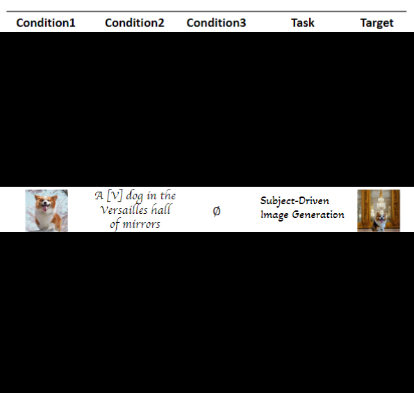
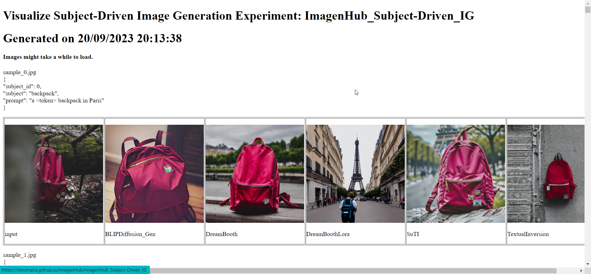
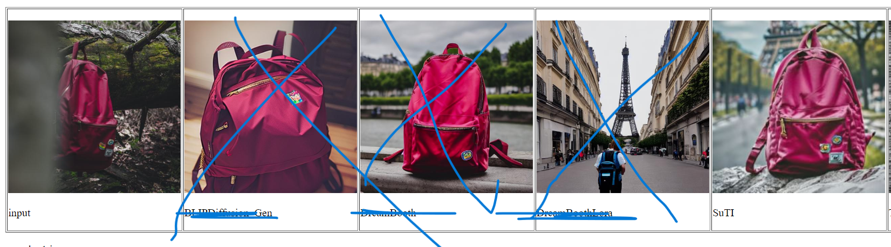
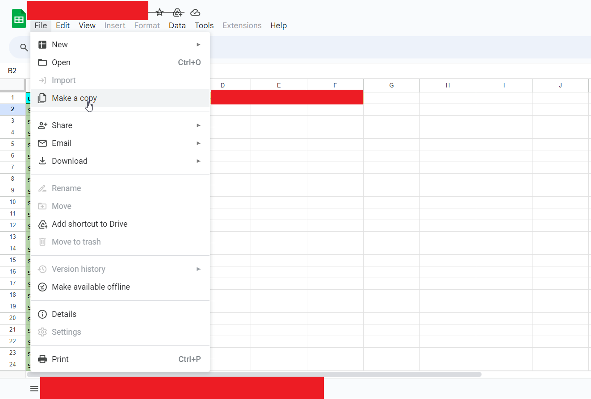
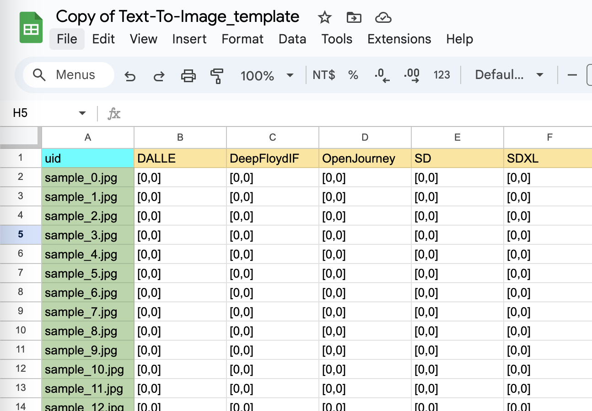
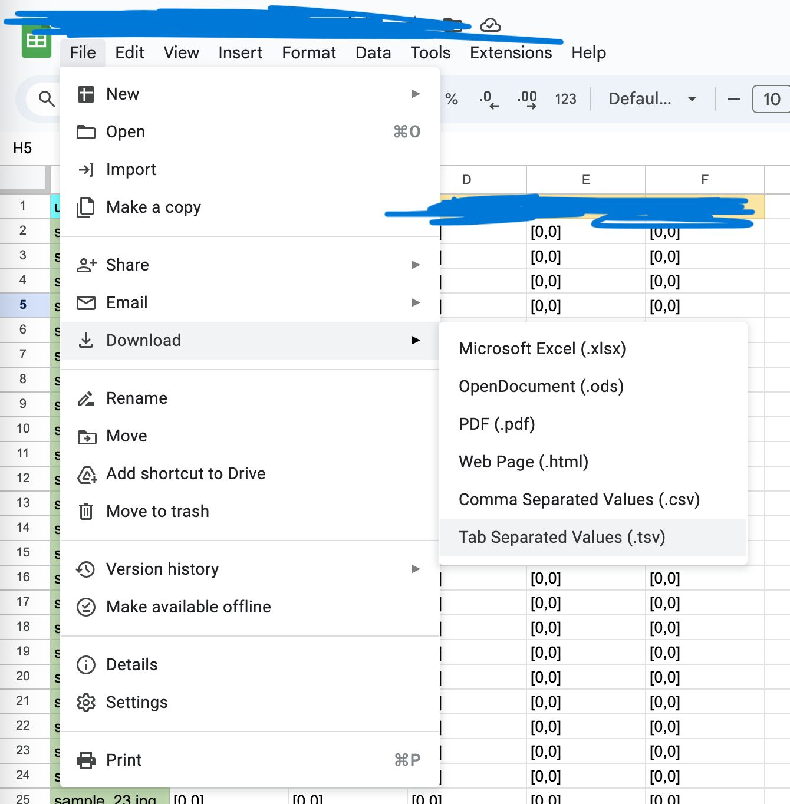

Introduction
Hello Rater! Thank you for participating our Rating AI-Generated Image Quality Task: Subject-Driven Image Generation branch.
Rating Instruction
To standardize the conduction of a rigorous human evaluation, we stipulate the criteria for each measurement as follows:
- Semantic Consistency (SC), score in range
[0, 0.5, 1] - Perceptual Realism (PR), score in range
[0, 0.5, 1]
Semantic Consistency (SC) ensures that the generated image is coherent in terms of guidance provided (i.e. Prompts, Subject Token, etc.). In another words, the image has to be aligned with the requirements provided in user's inputs.
Perceptual Realism (PR) ensures the generated image align with real-world characteristics. In another words, the image has to be visually convincing and closely resembles a real photograph (Photorealism).
General Rules for Semantic Consistency (SC) scoring:
- SC=0 : Image not following one or more of the conditions at all (e.g. not following the prompt at all, different background in editing task, wrong subject in subject-driven task etc)
- SC=0.5 : all the conditions are partly following the requirements.
- SC=1 : All the conditions are following >75% of the requirement. You agree that the overall idea is correct.
General Rules for Perceptual Realism (PR) scoring:
- PR=0: Obvious distortion/artifacts that are unrecognizable at first glance
- PR=0.5: Some artifacts but the objects are still recognizable; or Unnatural sense of detail feeling in some area (You find out the image looks strange after examining it carefully.)
- PR=1: You agree that the image generally look real (doesn't have to be 100% perfect. Like 90% is good enough.)
Please be sure follow the Detail explanation tables when labelling.
Detail explanation of SC scoring.
In image generations, we provide user input (conditions) to guide the image. The conditions can be different according to the task.

This is how we decide the SC score to judge whether the conditions are fulfilling the requirement:
| Condition 1 | Condition 2 (if applicable) | Condition 3 (if applicable) | SC rating |
|---|---|---|---|
| no following at all | Any | Any | 0 |
| Any | no following at all | Any | 0 |
| Any | Any | no following at all | 0 |
| following some part | following some or most part | following some or most part | 0.5 |
| following some or most part | following some part | following some or most part | 0.5 |
| following some part or more | following some or most part | following some part | 0.5 |
| following most part | following most part | following most part | 1 |
Detail explanation of PR scoring.
This is how we decide the PR score to judge whether the image looks real:
| Objects in image | Artifacts | Unusual sense | PR rating |
|---|---|---|---|
| Unrecognizable | serious | Any | 0 |
| Recognizable | some | Any | 0.5 |
| Recognizable | Any | some | 0.5 |
| Recognizable | none | little or None | 1 |
- Artifacts can be:
- Distortion, watermark, scratches, blurred faces, unusual body parts. subjects not harmonized.
- Unusual sense can be:
- wrong sense of distance (subject too big or too small compared to others), wrong shadow, wrong lighting, etc.
Examples:
prompt is the text description of the image.
input is the token object to appear.
SC Condtion 1: Is it following the prompt?
SC Condtion 2: Is subject in the output looks like the subject in token?
Case: Normal situation.
"subject_id": 16,
"subject": "dog8",
"prompt": "A <token> dog swimming in a river"
Input (Token) | OutputA | OutputB | OutputC | OutputD | OutputE


- This is how I would rate them:
- OutputA:
[0.5, 1]. SC=0.5: The subject of the output does not quite match the input image. PR=1: It looks real. - OutputB:
[1, 1]. SC=1: The output does match the subject and prompt. PR=1: It looks real. - OutputC:
[0, 1]. SC=0: The subject of the output does not match the input image. PR=1: It looks real. - OutputD:
[1, 1]. SC=1: The output does match the subject and prompt. PR=1: It looks real. - OutputE:
[0, 0]. SC=1: The subject does match the token. PR=0: Serious unusual body.
Case: Partial match.
"subject_id": 2,
"subject": "bear_plushie",
"prompt": "a <token> bear plushie in a basket"
Input (Token)| OutputA | OutputB | OutputC | OutputD | OutputE


- This is how I would rate them:
- OutputA:
[0, 1]. SC=0: The output does not match the prompt. PR=1: It looks real. - OutputB:
[0.5, 1]. SC=0.5: The hat of the subject does not match the input image. PR=1: It looks real. - OutputC:
[0, 1]. SC=0: The output does not match the subject. PR=1: It looks real. - OutputD:
[0, 0.5]. SC=0: The output does not match the prompt. PR=0.5: Some unnatural sense in the gound. - OutputE:
[0, 0.5]. SC=0: The output does not match the subject and prompt. PR=0.5: Some unnatural sense in the blue part.
How to complete the task
Before you start working on the task, please be sure that you already reigistered with us on Prolific.
We will examine the statistic to reject poor submissions. Please follow the guideline strictly.
First open the visualization link in a new page: https://chromaica.github.io/ImagenHub/ImagenHub_Subject-Driven_IG

The website might freeze for a while due to high amount of images.
In this task, we are only rating the SuTI model.
Please ignore all other columns except Input and SuTI. You only need to rate the SuTI column. We don't pay for other columns.

Then go to the googlesheet https://docs.google.com/spreadsheets/d/1wdCJPppWsO23vG2MMm6iRQlOiRVZMF01D6pe235p5uw/edit?usp=sharing and make a copy to your own google account

After copying the googlesheet to your drive, you should be able to edit the file safely.
Start filling the image score in [SC,PR] format for images that align the uid in the visualization link.
The filling should look like something like this: each image is rated with [SC, PR] score.

Please double check the dot (.) and comma (,) Submission with too many mistakes will be rejected.
How to submit
Once the labelling is done, please download the current sheet as .tsv file.

Finally, attach the tsv file through emailing to m3ku@uwaterloo.ca
Please list the email title as
[Prolific] AI-Generated Image Rating
For the content of the email, please follow this template:
Hi,
I am a participant of the Rating AI-Generated Image Quality Task: Subject-Driven_IG branch.
My ID:
Best,
Then message us on Prolific saying that you have finished the task. Send us your ID so we can align with your email.
You should get a response within 24 hours if the format is right. And the payment will sent through Prolific within 12 hours once you get the email reply.